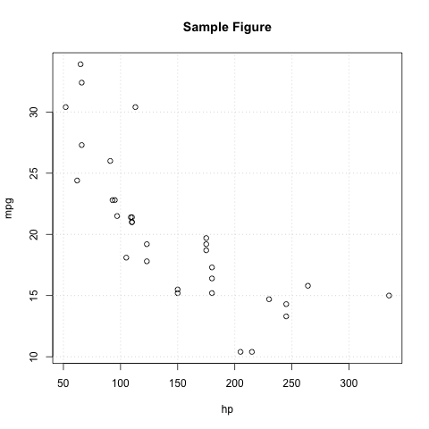
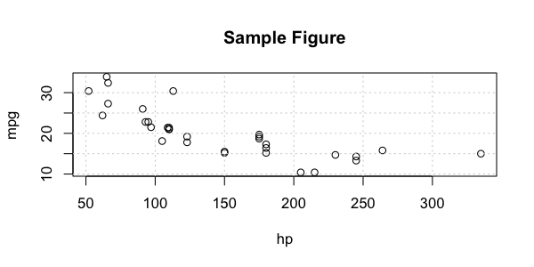
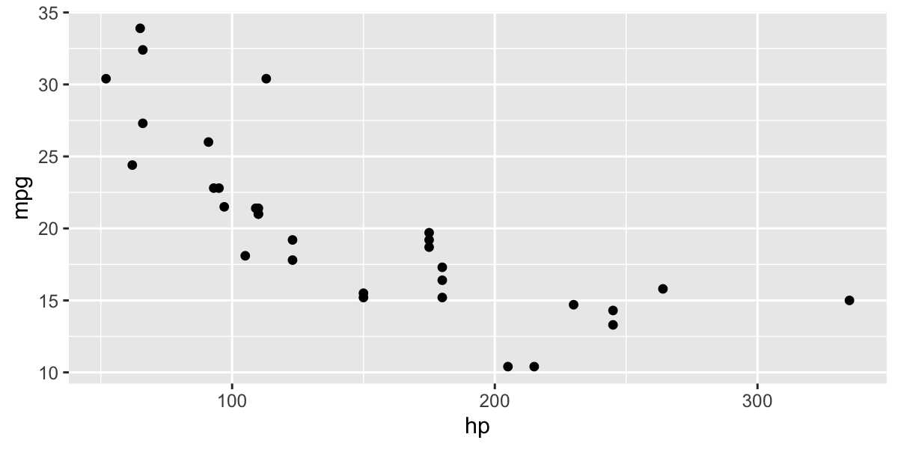

Org Babel Source Blocks for R
Table of Contents
Background
Org Babel is one of the best tools available for literate programming. As a data scientist, I use it as a plain-text alternative to Jupyter notebooks. Org-mode files are much easier to track with version control and don't require the overhead of a browser. There are tradeoffs: Jupyter notebooks handle the display of different types of output (text results, images, interactive figures, etc.) in a way that is both seamless and visually appealing. Displaying figures at all can be a challenge when getting started with org-babel. This post covers the basics of using org-babel for common data science tasks in R.
I will specifically talk about using org-babel in interactive (session-based) evaluation, much like how you would use a Jupyter notebook. Each org-babel source block is executed in the same environment, so data objects persist between source blocks. Some specific org-babel behaviors will depend on the specifics of your org-babel configuration; you can see mine below1.
For notes on setting up org-babel to work with R, read this article.
R Source Headers
I tend to use two different header configurations, one for code output and one for figures.
Code
#+begin_src R :session mysession # Code goes here add_1 <- function(x) { x + 1 } add_1(99) #+end_src
This (given my org-babel config)1 will appear as follows once exported:
# Code goes here
add_1 <- function(x) {
x + 1
}
add_1(99)
100
Displaying Tabular Output
When not dealing with plotting outputs, there are two main header options for result formatting that I tend
to use: :results output and :results value (the default). You can find details on these two modes
here.
The biggest differences between the two, in my experience, are visible when displaying or exporting
tabular data (e.g. a data.frame or tibble). I prefer the :results output formatting for interactive
work within an org file, simply because it is more compact. :results value tends to result in more
readable exports, though.
- Value
(With
:results valueheader arg).head(mtcars)
mpg cyl disp hp drat wt qsec vs am gear carb 21 6 160 110 3.9 2.62 16.46 0 1 4 4 21 6 160 110 3.9 2.875 17.02 0 1 4 4 22.8 4 108 93 3.85 2.32 18.61 1 1 4 1 21.4 6 258 110 3.08 3.215 19.44 1 0 3 1 18.7 8 360 175 3.15 3.44 17.02 0 0 3 2 18.1 6 225 105 2.76 3.46 20.22 1 0 3 1 Note that you may also need to include
:colnames yesin order to ensure the column names display correctly. - Output
(With
:results outputheader arg).head(mtcars)
mpg cyl disp hp drat wt qsec vs am gear carb Mazda RX4 21.0 6 160 110 3.90 2.620 16.46 0 1 4 4 Mazda RX4 Wag 21.0 6 160 110 3.90 2.875 17.02 0 1 4 4 Datsun 710 22.8 4 108 93 3.85 2.320 18.61 1 1 4 1 Hornet 4 Drive 21.4 6 258 110 3.08 3.215 19.44 1 0 3 1 Hornet Sportabout 18.7 8 360 175 3.15 3.440 17.02 0 0 3 2 Valiant 18.1 6 225 105 2.76 3.460 20.22 1 0 3 1
Figures
I don't find the display and exporting of figures particularly intuitive and finding help tends to be challening because of differences depending on the plotting system and because of changes over time. This approach works as of December 2021. Further details on exporting org source blocks can be found here.
Base R
Using Base R graphics, the following header argument will produce a link to a file which can then be previewed in your org-mode buffer and exported.
#+begin_src R :results file graphics :file path/to/file.png
Here's an example.
plot(mpg~hp, data=mtcars, main="Sample Figure") grid()

- Setting Graphical Parameters with Header Arguments
We can also set some graphical parameters such as figure height and width through the header arguments. For example, to set the with, height, and resolution, we add
:width 6 :height 3 :units in :res 100. You can find a complete list of graphical header arguments here.plot(mpg~hp, data=mtcars, main="Sample Figure") grid()

Ggplot and Lattice
Can we just use this approach for everything? From the documentation,
If the source code block uses grid-based R graphics, e.g., the lattice and ggplot2 packages, then care must be taken either to
print()the graphics object, specify:resultsoutput, or run the code in a:session. This is because the graphics functions from lattice and ggplot2 return objects that must be explicitly printed to see them, using the print function. This happens automatically when run interactively, e.g.,:session, but when called inside another function, it does not.
So in our case—as we're interested in :session evaluation—we can use this approach for
everything. But care must be taken (i.e. read the documentation) if attempting to use ggplot or
lattice graphics outside of a :session context.
library(ggplot2) ggplot(data=mtcars, mapping=aes(x=hp, y=mpg)) + geom_point()

An Alternative: Emacs-Jupyter
The excellent emacs-jupyter package is a solid alternative to the approaches described above. To use
it for R, install the emacs-jupyter package (e.g. with (use-package jupyter). In R, install IRkernel
(make sure to follow all of the instructions here for registering the kernel). Update
org-babel-load-languages to include jupyter. E.g.:
(org-babel-do-load-languages 'org-babel-load-languages '((emacs-lisp . t) (julia . t) (python . t) (jupyter . t)))
Then you can set up R blocks with:
#+begin_src jupyter-R :session my-jupyter-session
e.g.
1+1
[1] 2
Using emacs-jupyter results in a significantly different experience, which warrants a post of its
own (especially because the documentation for using emacs-jupyter with R is not easy to find or
follow).
A couple of reasons emacs-jupyter is worth considering:
- if a code block generates a figure, you don't need to specify a filename/path or use any fancy
header arguments to make sure the image appears in your org buffer. The image is named and saved
automatically to
org-babel-jupyter-resource-directory. This makes exploratory analysis comparatively seamless. I spend much less time tripping over header args withemacs-jupyter. - Accessibility of help: pressing
<M-i>with the cursor over an object opens a new window with documentation.
Footnotes:
Some of the above will be affected by the specifics of my org-babel config. Here it is:
;; org-babel
(org-babel-do-load-languages
'org-babel-load-languages
'(
(emacs-lisp . t)
(R . t)
(python . t)
(org . t)
(dot . t)
(sql . t)
(http . t)
(latex . t)
(js . t)
(shell . t)
(C . t)
(jupyter . t)
))
(setq org-babel-default-header-args '((:eval . "never-export")
(:exports . "both")
(:cache . "no")
(:results . "replace"))
org-src-fontify-natively t
org-src-preserve-indentation t
org-src-tab-acts-natively t
org-src-window-setup 'current-window
org-confirm-babel-evaluate nil)
(eval-after-load 'org
(add-hook 'org-babel-after-execute-hook 'org-redisplay-inline-images))
- I have it set to export both code and output (
~:exports . "both"). The"never-export"part specifies that the code should not be re-run run during export. I try to ensure that the output is what I want it to be prior to export, but that's just what works for my workflow.- I noticed this was not being respected when exporting to html with
ox-publish. It was necessary to add(setq org-export-use-babel nil)to prevent the export from triggering re-execution of all of the source blocks.
- I noticed this was not being respected when exporting to html with
org-confirm-babel-evaluate-nilresults in org babel not asking for confirmation every time I execute a code block (details here).org-src-preserve-indentationprevents org-babel from automatically indenting code blocks. The auto-indentation can look nice, but I found that, more often than not, it resulted in more challenges in code intentation than it was worth.- You can look up anything else you're curious about!
<C-h>-fand<C-h>-vare your friends.